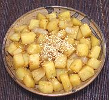

|
Seasoned Potato CubesKorea - Gamjajorim | ||||
| Makes: Effort: Sched: DoAhead: |
15 oz ** 35 min Yes |
This side dish is more substantial than Banchan (small side dishes) and can be served with rice for lunch or used as a Western side dish or snack. It is easier to make and has fewer calories than conventional fried potatoes. | |||
|
1 2 3 1 2/3 2 1 1 1/2 |
# cl oz T c T t T T |
Potatoes (1) Garlic Onion Oil Water Soy Sauce Sugar Sesame Oil, dark Sesame, toasted (3) |
Note: I have cut the sugar to 1/3 the amount in the pattern recipe, and even that seems a bit much - use your own best judgement. Prep - (10 min)
|